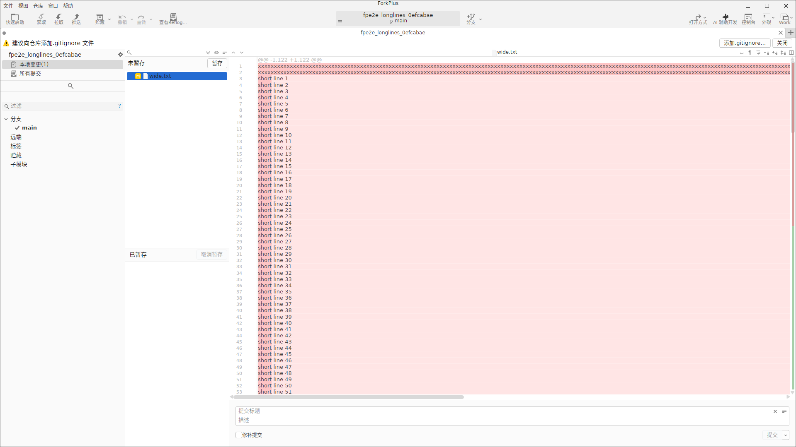
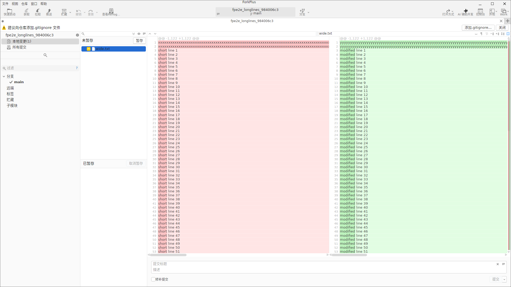
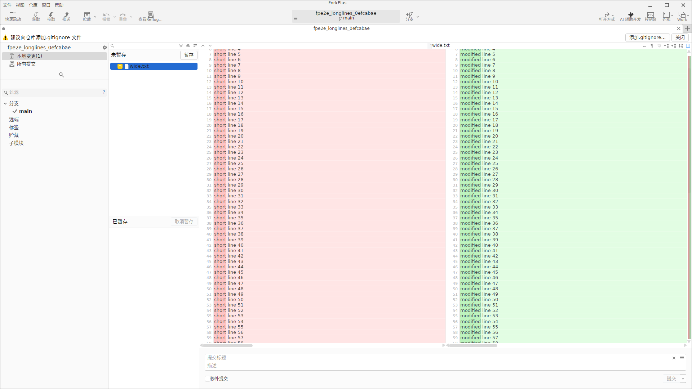
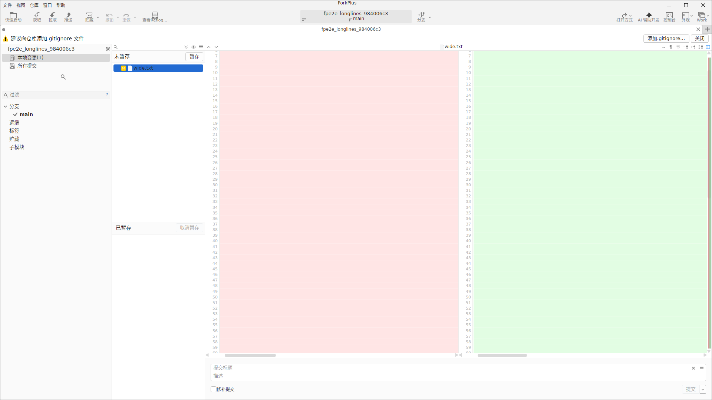
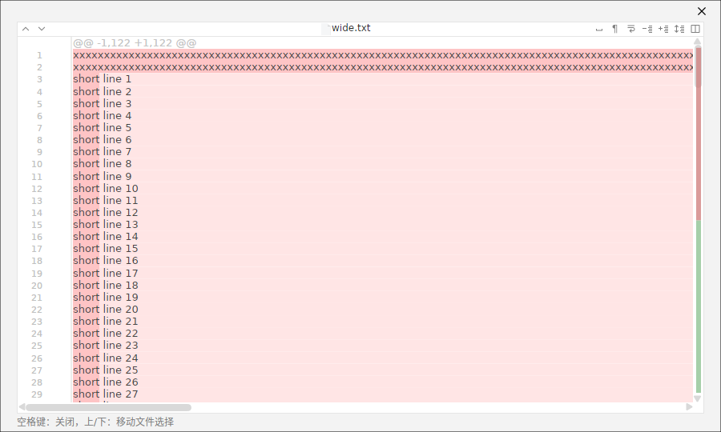

ForkPlus 的 Diff 视图用于对比文件的两个版本（工作区 vs 暂存区/HEAD、或历史提交 vs 其父提交）。文本文件默认支持两种展示模式，并针对长行、多文件评审做了专门优化。
Split 模式（单编辑器）
Split（拆分）模式使用一个统一编辑器展示差异：左侧行号为旧版本（红色/粉色背景表示删除行），右侧行号为新版本（绿色背景表示新增行），同一 hunk 内两种改动并排展示在一行内。顶部文件头显示文件路径与 hunk 范围（如 @@ -1,122 +1,122 @@）。
Split 是最紧凑的查看方式，适合改动集中在少量行、无需频繁左右对照的场景。可通过 Commit 视图的 DiffLayoutModeToggleButton 在 Split 与 Side-by-side 之间切换。

Side-by-Side 模式（双栏对照）
Side-by-Side（并排）模式把编辑器一分为二：左栏显示旧版本（红色），右栏显示新版本（绿色）。逐行对齐便于观察每个改动点的旧貌与新貌，适合大段结构改动或代码重构。切换后 Commit 视图内会出现两个独立编辑器，左右栏一一对应。

width.txt 全部 51 行都被修改，因此每行都显示为红 / 绿。双编辑器的滚动同步
在 Side-by-Side 模式下，左右两个编辑器会自动同步垂直与水平滚动：滚动右侧编辑器，左侧会自动跟随到同一相对位置，确保上下两栏始终停留在相同的内容区段，方便连续评审长文件。

长行水平滚动
对于包含超长行的文件（如压缩 / 生成的单行内容），Diff 编辑器提供横向滚动条，并保持左右两栏水平同步，保证在对比超宽行时两栏的列基准一致。

Diff 弹窗窗口
在 Commit 视图的未暂存/已暂存文件列表中选中某个文件后按 空格（Space），ForkPlus 会打开一个独立的 Diff 弹窗窗口，标题为文件名（如 width.txt），在更大视野下展示该文件的差异。
弹窗窗口便于「只看这个文件」的聚焦评审。底部状态栏提供快捷键提示：空格 关闭弹窗、上/下 在文件列表间移动选择——即在多个变更文件之间快速跳转逐个评审。
